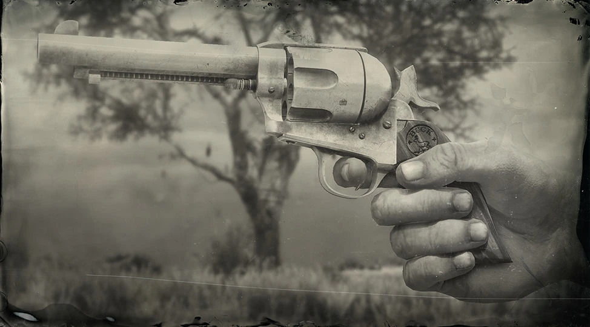
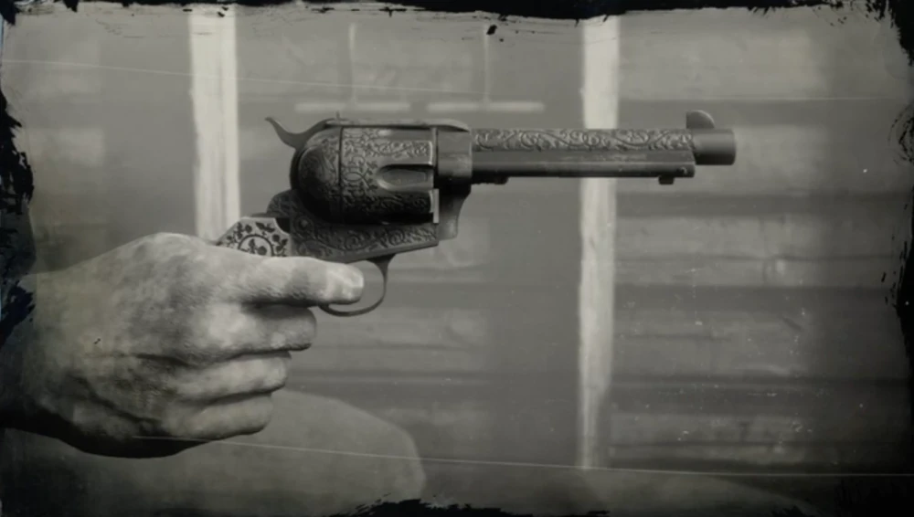
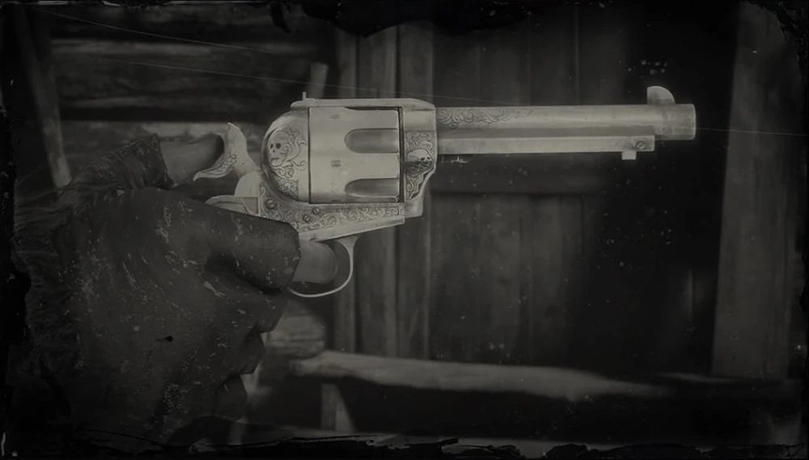
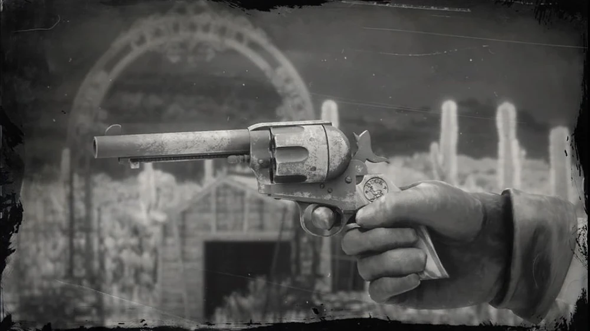
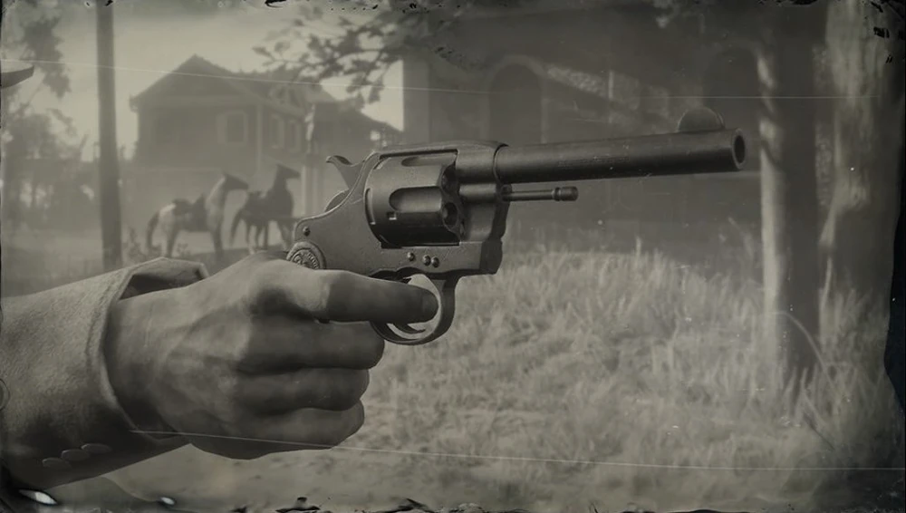
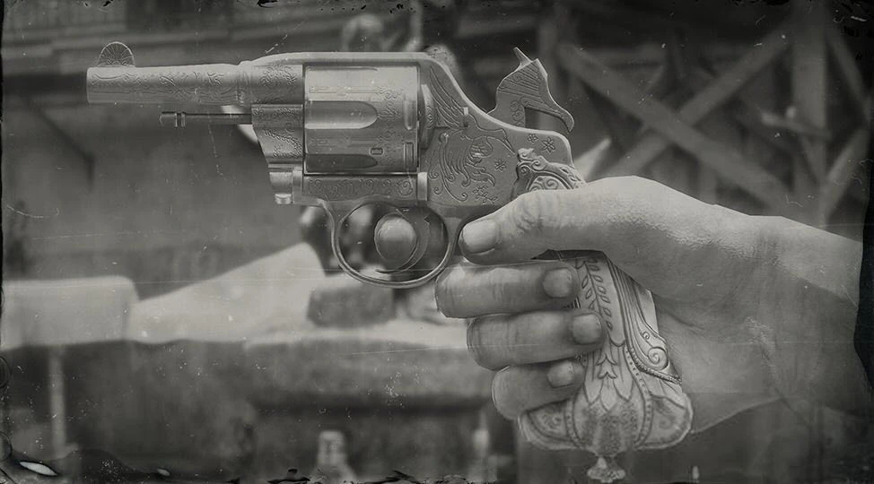
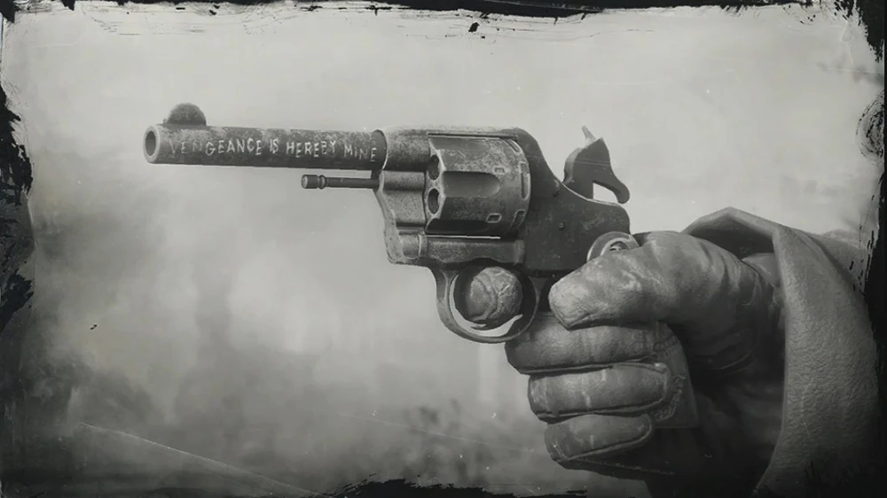
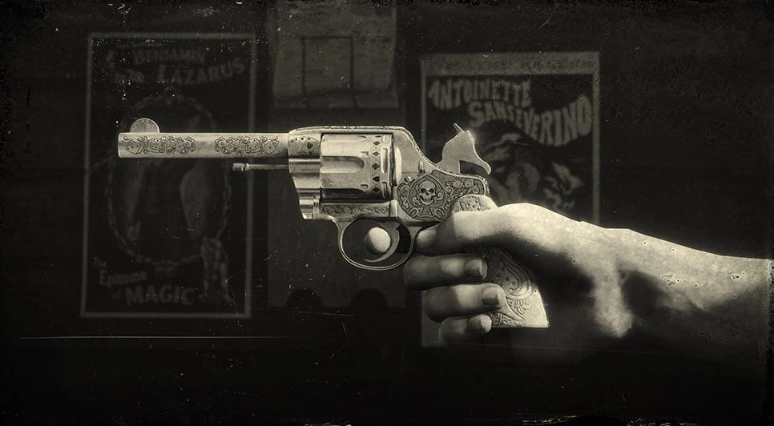
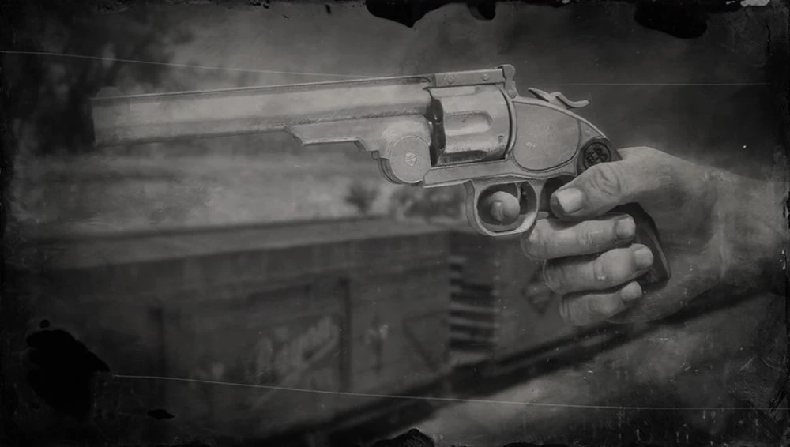
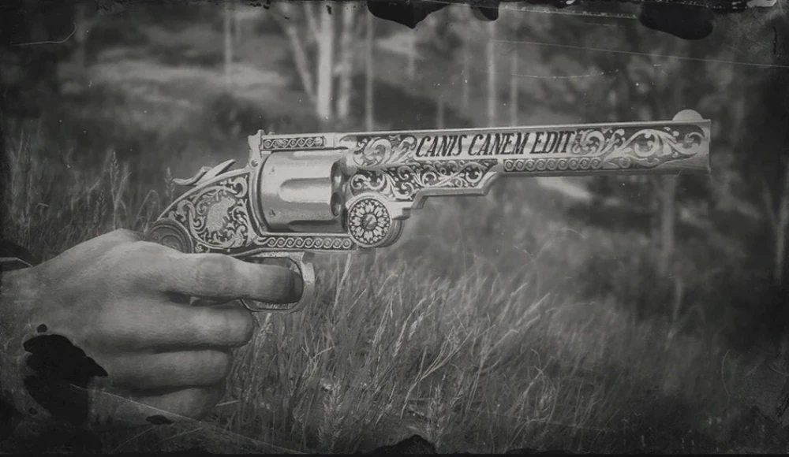

Revólver de Vaqueiro

Uma arma lateral popular e clássica, o Revolver de Vaqueiro é um excelente revólver versátil, com um bom equilíbrio de danos, precisão e velocidade de tiro. Adequado para combate a curta e média distância, esta arma também pode ser usada a cavalo. Esta arma tem uma capacidade de munição de seis cartuchos e pode usar munições de revólver normais, de alta velocidade, de ponta quebrada, expressas e explosivas.
Revolver do Granger

Um revólver de vaquiero único, com delicadas gravuras de caveiras e um cabo de marfim esculpido com uma águia pousada em cactos a comer uma cobra. Anteriormente propriedade do falecido pistoleiro Flaco Hernández, que foi derrotado num duelo na Estalagem de Cairn, esta arma tem uma capacidade de munição de seis cartuchos e pode usar munições de revólver normais, de alta velocidade, de ponta quebrada, expressas e explosivas.
Revólver do Flaco

Um revólver de vaquiero único, com um acabamento em metal escuro e adornado com gravações personalizadas. Anteriormente propriedade do falecido pistoleiro Emmet Granger, que foi derrotado num duelo perto da Estação Flatneck, esta arma tem uma capacidade de munição de seis cartuchos e pode usar munições de revólver normais, de alta velocidade, de ponta estriada, expressas e explosivas.
Revólver do John

Propriedade de John Marston, este revólver de vaqueiro tem um acabamento em aço enegrecido e um punho de osso personalizado. No entanto, depois de anos de crimes e de tráfico de armas, esta arma já viu melhores dias. Esta arma tem uma capacidade de munição de seis cartuchos e pode usar munições de revólver normais, de alta velocidade, de ponta estriada, expressas e explosivas
Revólver de Ação Dupla

O revólver de ação dupla D.D. Packenbush é uma arma de disparo rápido com danos relativamente baixos. O mecanismo avançado evita a necessidade de engatilhar, à custa de um puxão pesado do gatilho e de uma menor precisão. A rapidez de disparo faz com que seja uma boa escolha para combate montado. Esta arma tem uma capacidade de munição de 6 cartuchos e pode usar munições de revólver normais, de alta velocidade, de ponta estriada, expressas e explosivas.
Revólver do Algernon

Um revólver de dupla ação raro, com um cano compacto e encurtado, gravação decorativa em ouro e uma pega única em pérola esculpida à mão. Pertenceu anteriormente a Algernon Wasp, um colecionador de artigos exóticos em Saint Denis. Esta pistola tem uma capacidade de munição de seis cartuchos e pode utilizar munições de revólver normais, de alta velocidade, de ponta estriada, expressas e explosivas.
Revólver do Micah

Um dos revólveres gémeos usados por Micah Bell, este revólver de ação dupla personalizado tem uma armação de aço cinzento com um punho de caveira vermelho e preto personalizado. Tem também a inscrição “Vengeance is hereby mine” gravada à mão na parte lateral do cano. Esta arma tem uma capacidade de munição de seis cartuchos, podendo usar munições de revólver normais, de alta velocidade, de ponta estriada, expressas e explosivas.
Revólver de Apostador

Uma variante do revólver de dupla ação, o elegante revólver de Apostador da D.D. Packenbush é a arma perfeita para o pistoleiro moderno. Numa classe própria, o High Roller apresenta gravuras ornamentadas e um punho em pérola e é mortífero quando empunhado a dois. A arma tem uma capacidade de munição de seis cartuchos e pode usar munições de revólver normais, de alta velocidade, de ponta aberta, expressas e explosivas.
Revólver Schofield

O poderoso Hutton & Baird Schofield é um revólver preciso com danos elevados, sendo uma boa escolha para qualquer pistoleiro sério. Apesar de uma taxa de disparo e velocidade de recarga mais lentas, quando comparada com outros revólveres, ainda pode ser empunhada em dupla com grande efeito. Esta arma tem uma capacidade de munição de seis cartuchos e pode usar munições de revólver normais, de alta velocidade, de ponta quebrada, expressas e explosivas.
Revólver do Calloway

Um revólver Schofield único, gravado à medida, banhado a prata, com “Canis Canem Edit” gravado na parte lateral do cano. Esta arma pertenceu anteriormente ao falecido pistoleiro Jim “Boy” Calloway, que foi derrotado num duelo em Brandywine Drop. Esta arma tem uma capacidade de munição de seis cartuchos e pode usar munições de revólver normais, de alta velocidade, de ponta estriada, expressas e explosivas.